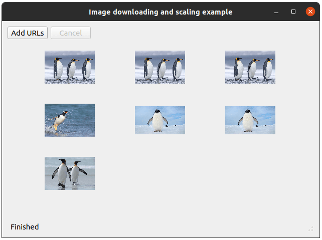

Image Scaling Example
Demonstrates how to asynchronously download and scale images.

This example shows how to use the QFuture and QPromise classes to download a collection of images from the network and scale them, without blocking the UI.
The application consists of the the following steps:
- Download images form the list of URLs specified by the user.
- Scale the images.
- Show the scaled images in a grid layout.
Let's start with the download:
QFuture<QByteArray> Images::download(const QList<QUrl> &urls)
The download() method takes a list of URLs and returns a QFuture. The QFuture stores the byte array data received for each downloaded image. To store the data inside the QFuture, we create a QPromise object and report that it has started to indicate the start of the download:
QSharedPointer<QPromise<QByteArray>> promise(new QPromise<QByteArray>());
promise->start();
...
return promise->future();
}
The future associated with the promise is returned to the caller.
Without going into details yet, let's note that the promise object is wrapped inside a QSharedPointer. This will be explained later.
We use QNetworkAccessManager to send network requests and download data for each url:
for (auto url : urls) {
QSharedPointer<QNetworkReply> reply(qnam.get(QNetworkRequest(url)));
replies.push_back(reply);
And here starts the interesting part:
...
QtFuture::connect(reply.get(), &QNetworkReply::finished).then([=] {
if (promise->isCanceled()) {
if (!promise->future().isFinished())
promise->finish();
return;
}
if (reply->error() != QNetworkReply::NoError) {
if (!promise->future().isFinished())
throw reply->error();
}
promise->addResult(reply->readAll());
// Report finished on the last download
if (promise->future().resultCount() == urls.size()) {
promise->finish();
}
}).onFailed([=] (QNetworkReply::NetworkError error) {
promise->setException(std::make_exception_ptr(error));
promise->finish();
}).onFailed([=] {
const auto ex = std::make_exception_ptr(
std::runtime_error("Unknown error occurred while downloading."));
promise->setException(ex);
promise->finish();
});
}
...
Instead of connecting to QNetworkReply's signals using the QObject::connect() method, we use QtFuture::connect(). It works similar to QObject::connect(), but returns a QFuture object, that becomes available as soon as the QNetworkReply::finished() signal is emitted. This allows us to attach continuations and failure handlers, as it is done in the example.
In the continuation attached via .then(), we check if the user has requested to cancel the download. If that's the case, we stop processing the request. By calling the QPromise::finish() method, we notify the user that processing has been finished. In case the network request has ended with an error, we throw an exception. The exception will be handled in the failure handler attached using the .onFailed() method. Note that we have two failure handlers: the first one captures the network errors, the second one all other exceptions thrown during the execution. Both handlers save the exception inside the promise object (to be handled by the caller of the download() method) and report that the computation has finished. Also note that, for simplicity, in case of an error we interrupt all pending downloads.
If the request has not been canceled and no error occurred, we read the data from the network reply and add it to the list of results of the promise object:
...
promise->addResult(reply->readAll());
// Report finished on the last download
if (promise->future().resultCount() == urls.size()) {
promise->finish();
}
...
If the number of results stored inside the promise object is equal to the number of the urls to be downloaded, there are no more requests to process, so we also report that the promise has finished.
As mentioned earlier, we've wrapped the promise inside a QSharedPointer. Since the promise object is shared between handlers connected to each network reply, we need to copy and use the promise object in multiple places simultaneously. Hence, a QSharedPointer is used.
download() method is called from the QImage::process method. It is invoked when the user presses the "Add URLs" button:
...
connect(addUrlsButton, &QPushButton::clicked, this, &Images::process);
...
After clearing the possible leftovers from previous download, we create a dialog so that the user can specify the URLs for the images to download. Based on the specified URL count, we initialize the layout where the images will be shown and start the download. The future returned by the download() method is saved, so that the user can cancel the download if needed:
void Images::process() { // Clean previous state replies.clear(); if (downloadDialog->exec() == QDialog::Accepted) { const auto urls = downloadDialog->getUrls(); if (urls.empty()) return; cancelButton->setEnabled(true); initLayout(urls.size()); downloadFuture = download(urls); statusBar->showMessage(tr("Downloading...")); ...
Next, we attach a continuation to handle the scaling step:
downloadFuture.then([this](auto) { cancelButton->setEnabled(false); })
.then(QtFuture::Launch::Async,
[this] {
QMetaObject::invokeMethod(this,
[this] { updateStatus(tr("Scaling...")); });
return scaled();
})
...
Since the scaling may be computationally heavy, and we don't want to block the main thread, we pass the QtFuture::Launch::Async option, to launch the scaling step in a new thread. The scaled() method returns a list of the scaled images to the next step, which takes care of showing images in the layout.
Note that updateStatus() is called through QMetaObject::invokeMethod(), because it updates the UI and needs to be invoked from the main thread.
...
.then(this, [this](const QList<QImage> &scaled) {
showImages(scaled);
updateStatus(tr("Finished"));
})
...
For the same reason showImages() also needs to be invoked from the main thread, so we pass this as a context to .then(). By default, .then() is launched in the parent's thread, but if a context object is specified, it is launched in the context object's thread.
Then we add cancellation and failure handlers:
...
.onCanceled([this] { updateStatus(tr("Download has been canceled.")); })
.onFailed([this](QNetworkReply::NetworkError error) {
updateStatus(tr("Download finished with error: %1").arg(error));
// Abort all pending requests
abortDownload();
})
.onFailed([this](const std::exception& ex) {
updateStatus(tr(ex.what()));
});
We don't need to specify the context anymore, because .onCanceled() and the next handlers will be launched in their parent's context.
The handler attached via the .onCanceled() method will be called if the user has pressed the "Cancel" button:
...
connect(cancelButton, &QPushButton::clicked, this, &Images::cancel);
...
The cancel() method simply aborts all the pending requests:
void Images::cancel() { statusBar->showMessage(tr("Canceling...")); downloadFuture.cancel(); abortDownload(); }
The handlers attached via .onFailed() method will be called in case an error occurred during one of the previous steps. For example, if a network error has been saved inside the promise during the download step, it will be propagated to the handler that takes QNetworkReply::NetworkError as argument. A failure can happen also during the scaling step:
QList<QImage> Images::scaled() const { QList<QImage> scaled; const auto data = downloadFuture.results(); for (auto imgData : data) { QImage image; image.loadFromData(imgData); if (image.isNull()) throw std::runtime_error("Failed to load image."); scaled.push_back(image.scaled(100, 100, Qt::KeepAspectRatio)); } return scaled; }
The rest of the code is straightforward, you can check the example project for more details.